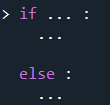
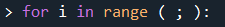
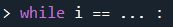

• Algorithme
Def :
Suite d'instructions donnés dan sun ordre précis, organisés en étapes pour traiter des données, pour arriver à un résultat précis.
Ce language est pratique car il est accessible à tous. Le mélange entre langage de programation et français permet de comprendre et échanger
rapidement.
Les
règles:
- nom de variable clair
- PAS 2 variable même nom (a ; A)
- une instruction par ligne
- opération de base : LIRE, ECRIRE, ←
Remarque :
Les variables sont des noms donnés à la référence d'une donnée mémoire (binaire).

• Instruction
IF THEN ELSE
C'est un test par une condition (booléen). Si la réponse = True : passe à then. Si la réponse = False : passe à then.

FOR
Vérifie si la valeur entrée correspond au paramètre du FOR. Si la boucle est bonne, elle accède a la suite.

WHILE
Répete la boucle tant que le résultat correspond à vrai.

Remarque :
Les commentaires sont super important pour se retrouver dans un code.
• Trace d'exécution
Permet de :
- suivre et contrôler l'execution du programme.
- détecter des erreurs.
- comprendre.
Fin du cours sur le pseudo code. Cliquez ici pour retourner en haut de la page.